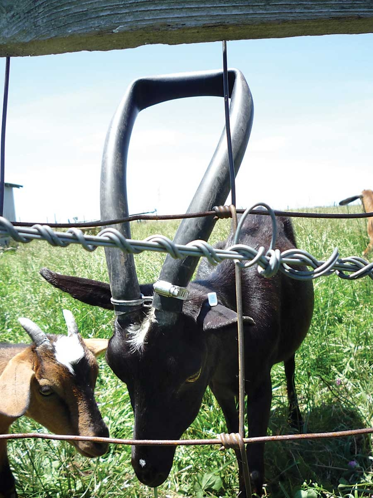

We have goats with horns and have had frustrations keeping their heads from getting stuck in the fence. After cutting many holes in the fence, we knew we had to come up with a solution.
New fencing was out of our price range, and we had only one goat that was getting her head stuck routinely. So my husband cut a piece of washing machine hose and used clamps to attach the hose to each of her horns to use as a goat horn guard. Now she might look a little funny, but we can leave the house and not worry that she will get stuck in the fence for long periods of time. Cheap. Easy. Humane.
|
 KIM RATCLIFF It may not be pretty, but this setup keeps the goat from getting her head stuck in the fencing. |
|
|